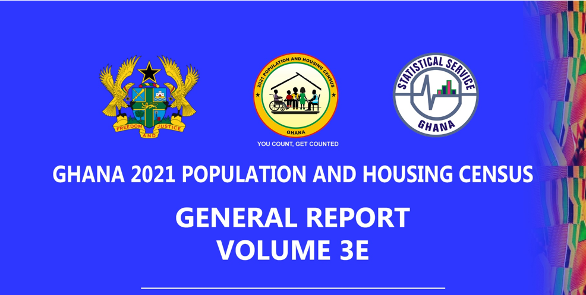
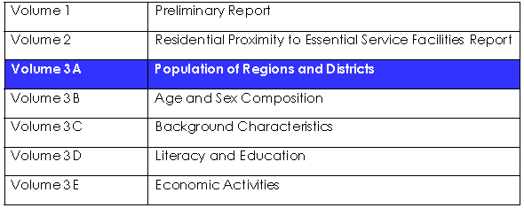
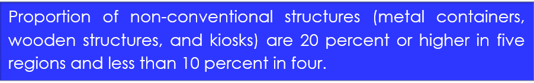

Brand Guide
1. REPORT DESIGN
1.1 Cover Design
The front cover design of the report must have the logos, the name of the census/survey/routine or administrative data report, the volume number of the report if applicable, the name of the report, images which reflect the content of the report, and the month and year of publication.
All text on the cover page should be in UPPER CASE.
The back cover of the report should have the logo of the Statistical Service and the link to the GSS website.
1.1.1 Use of Images
The use of images on the cover page must reflect the content and themes of the report.
The images should be semi-transparent and placed behind the title of the report underneath the logos and the name of the census/survey/routine or administrative data report.
1.1.2 Use of logos
The cover design of the report should have Ghana’s Coat of Arms and the Statistical Service logo at the top of the page, with the Coat of Arms on the left, and the GSS logo on the right.
When available, census/survey/routine or administrative data report logos must be placed between the Coat of Arms and the GSS logo as illustrated below.

The logos of the organisations involved, or programmes associated with the project should be placed at the bottom part of the cover page.
Writers should ensure that the correct GSS logo (shown below) is used. Logos should not be resized or reshaped.
1.1.3 Use of Colour
The recommended primary colours utilised in report designs should be inspired by the GSS logo.
Minks
~
Hex: #210D69
rgb: 210,210,210
.
Highlighter Lilac
~
Hex: #DB2E76
rgb: 219,46,118
.
Allegiance
~
Hex: #586889
rgb: 88,104,137
.
Rich Green
~
Hex: #227C42
rgb: 34,124,66
.
1.2 Page Margins
The orientation of reports should be in portrait for pages with text and charts. Pages with wide tables can be presented in landscape orientation. The following page margins should be used:
Top: 2.00 cm and Bottom: 1.25 cmLeft: 2.30 cm and Right: 2.30 cm
1.4 Section numbering
The style for numbering chapters and sections within reports is shown below
Main chapter: 1First level sub-section: 1.1Second level sub-section: 1.1.1Third level sub-section: 1.1.1.1
1.5 Font
1.5.1 Size, Style, Colour and Capitalisation of Text
The font type Century Gothic (Body) should be used for text. Below are the font sizes, styles, colours, and indentation for the different levels of text:
Heading one should be used for chapter or section headings numbered 1, 2, 3 etc. The subsequent heading styles should be used for the different sub-section levels.
HEADING ONE (FONT SIZE 16; BOLD; UPPER CASE; BLACK)
Heading Two (font size 14; bold; black; capitalise each word)
Heading Three (font size 13; bold; black; capitalise each word)
Heading Four (font size 12; bold; italics; black; capitalise each word)
Text within paragraph
(Font size 11; black; capitalise first word of sentence and proper nouns)
Figure title
(font size 11; bold; small caps case; black, lighter 35%)
Table title
(font size 11; bold; small caps case; black, lighter 35%)
FOOTER
(FONT SIZE 9; UPPER CASE; WHITE, DARKER 50%)
1.5.2 Tables
The font type Arial Narrow, font size 11 should be used for tables in the reports. In cases where tables have too many columns to fit the font size 11, a smaller size can be used.
1.5.3 Charts
Century Gothic Bold, font size 11 should be used for the labels on graphs.
1.6 Paragraph and Spacing
Text within paragraphs should be justified paragraphs. The following should be the line spacing used for text:
Paragraph spacing: Before: 12pt and After: 8ptLine spacing: 1.15
1.7 Bullets and Numbering
Round bullets (shown) should be used.
For lists with five or more items, numbers should be used instead of bullets.]
When listing items ensure that there is consistency in the listed (verbs items as illustrated below:
| Consistent | Inconsistent |
|---|---|
|
|
|
|
|
|
Bullet items should be limited to single words, phrases or one sentence.
When listing items that are complete sentences, each item should start with a capital letter and end with a full stop.
When listing items that are single words or short phrases, items should start with small letters (except when the first word is a proper noun. The subsequent items should start with a small letter. Each item apart from the last should end with a semicolon. The penultimate item should have “and” or “or” after the semicolon. The last item should end with a full stop. An example is shown below:
Worked at least one hour in their paid job or business activity;Engaged in a family business for payment in cash or in kind; orHad a paid job or business activity but were on temporary absence.
2. WRITING STYLE
2.1 Grammar and Style
All reports should be written in a formal professional style and free of grammatical and typographical errors. Writers are encouraged to utilise the word processing software or online editing tools to review their drafts before submission.
2.1.1 Language
GSS produces publications for diverse users including policy makers, civil society organisations, development partners and the private sector. As such reports should be written in clear non-technical language. Writers should use more common words and restrict usage of jargon to increase the readability of reports. When technical terms are used, they should be properly explained.
Reports should exclude:
contractions (e.g., can’t, don’t)shorthand (e.g., &, cont’d,)shortened word forms (e.g., org., dept.)colloquial expressions (e.g., kids, folks, a bunch of, lots of)idioms (e.g., deal with, on the flip side, boils down to)
Writers should also avoid the use of local slang such as dumsor (persistent power outages). Local slang can be used when there is no formal alternative, but should be italicised example, trotro, or chop bar. Where there is a formal but less recognised alternative, the slang can be inserted in parentheses e.g., female porters (kayayei).
Reports should be written in the third person and avoid the use of personal pronouns such as, I and we.
1.1.2 Clarity
As much as possible, reports should use the active voice (e.g., the Statistical Service conducted a three-day training for five enumerators) and avoid the passive voice (e.g., five enumerators were trained for three days).
Writers should use specific figures and avoid subjective quantifiers such as many, a few, and most.
Writers should similarly avoid using adverbs such as very, really, and quite as descriptive words and rather use one fitting word e.g., rapidly (very quickly), sizeable (really large), moderately (quite slowly).
2.1.3 Verbosity
While there are no strict limits to sentence lengths, writers are advised to have an average of 12 to 15 words per sentence in their reports.
Similarly, writers are advised to average three to five sentences per paragraph.
Writers should aim for short succinct sentences. For instance, “The purpose of the pre-test was to assess the questionnaire” (10 words) can be “The pre-test assessed the questionnaire” (five words).
Phrases should be replaced with single words whenever possible. Some suggestions are provided below: .
| One word | Phrase |
|---|---|
| Because | As a consequence of, due to the fact that |
| For | For the purpose of |
| Despite, although | In spite of the fact that |
| Without | In the absence of |
| While, during | In the course of |
| Examine, explore, assess | Look closely at, to find out whether |
| Daily | On a daily basis |
| Comprises | Consists of |
| Considering | In view of |
| Excludes | Does not include |
| Equivalent, similar | The same as |
2.1.4 Tenses
Verb tenses should be consistent throughout. The recommended tenses are presented below:
| Section | Tense | Example |
|---|---|---|
| Overview including field operations, and other activities completed prior to report writing | Past | GSS developed two categories of instruments for the 2021 PHC: the listing form and the enumeration instruments. |
| Literature review | Present perfect | Being behind grade for age has been shown to negatively influence students’ academic and socio-emotional outcomes. |
| Past | Anarfi, Awusabo-Asare, and Nsowah-Nuamah (2000) estimated that there were 500,000 to 800,000 Ghanaians in Côte d’Ivoire in 1986. | |
| Data and methodology | Present | The statistics presented in this thematic brief are generated from the 2021 PHC and on trends are complemented with data from the 2000 and 2010 censuses. |
| Findings and highlights | Present | Three in ten (30.2%) persons 6 years and older are not literate in any language. |
| Past tense can be used for historical comparisons | Urban and rural populations increased in all regions between 2010 and 2021 except Eastern and Ahafo regions where rural population decreased. | |
| Conclusions | Present | The findings indicate that a substantial share of children is being deprived of their rights as outlined in the 1992 Constitution and the 1998 Children’s Act. |
| Recommendations | Present | Given the observed protective influence of schooling on girls, it is particularly important for a coordinated effort to ensure that girls start and stay in school. |
2.1.5 Punctuation
When a list within a sentence contains three or more items, a comma must be used after all items except the last one as shown below :
This report presents data on literacy, current school attendance, and educational attainment.
When items in the list contain commas, semicolons should be used to separate items as shown below:
This publication targets Ministries, Departments, and Agencies (MDAs); Metropolitan, Municipal and District Assemblies (MMDAs); development partners; civil society organisations (CSOs); private sector; research and academia; and the public.
One space should separate sentences within a paragraph.
2.1.6 Subject verb agreement
Institutions are singular e.g., GSS produces quality data.
Data should be considered a collective noun e.g., the data shows fertility has declined overtime.
Statistics should be referred to in the plural e.g., statistics indicate that fertility has declined overtime.
2.1.7 Capitalisation of Words
Capital letters should be used for the first words in sentences and for proper nouns. Proper nouns refer to specific persons, or places. Common nouns, which are general, should not be capitalised. An example is shown below:
We are also indebted to the universities for their technical support, particularly the University of Ghana and the University of Cape Coast.
The names of regions should be capitalised as such Greater Accra Region. When referring to two or more regions however, regions must not be capitalised. An example is shown below:
The Northern Region (14,031) has the highest number of girls aged 12 to 17 years who have ever been in union, followed distantly by the Ashanti (9,767) and Greater Accra regions (6,063).
COVID-19 should be capitalised while coronavirus is written in small letters.
2.2 Writing about Numbers
The following guidelines refer to numbers in text, charts, and tables.
All figures from one to nine should be written in words and those 10 and above should be written in figures. Exceptions include age e.g., persons aged 5 years and currency e.g., GH₵8.
Ordinal numbers from first to ninth must also be spelled out. 10th and above can be written in figures.
Numbers above 999 must be written with commas e.g., 511,622.
When a percentage figure is mentioned in a text, the words ‘per cent’ should follow the figure. However, if the figure is quoted in brackets, the percentage symbol (%) should be used. An example is:
Among children engaged in economic activity, almost 80 per cent are involved in agriculture-related activities with the highest proportion in Savannah (89.8%) and the least in Greater Accra (26.2%).
Sentences beginning with numbers should have the figures written out in words regardless of whether the number is below or above ten. An example is:
Thirteen per cent of those who have attended school in the past have tertiary education as the highest level attained.
Fractions (e.g., one-fifth) should be written in words.
Use “to” in text and not hyphens when referring to ranges e.g., 15 to 19 years.
Numbers above 1,000 should be fully written out and abbreviations (such as 1k) should not be used.
Numbers above 1,000,000 can be written in figures and words e.g., 2 million.
2.3 Spelling
Spellings should follow the British convention. Examples are provided below:
Words ending in the following:
-se: e.g., organise and analyse
-our: e.g., colour and labour
-re: e.g., centre and kilometre
-il: e.g., fulfil and enrol
Words containing the following:
-mme- e.g., programme
-oe- e.g., foetus, diarrhoea
For consistency, writers should follow the conventions below for the following compound words:
Baseline and endline
Coordinator; coordinate
Cooperation, cooperate
Dataset Database
Decision-maker; decision-making
Email
Long-term
Metadata
Multidisciplinary
Online
Policy maker
Self-employment
Underperforming
2.4 Use of Abbreviations
All abbreviations in reports must be fully spelled out when first mentioned.
Abbreviations should be written without full stops e.g., CAPI.
Abbreviated measurements (such as km, kg) are acceptable. When using abbreviated measures, there should be no space between number and measure e.g., 50km.
When using the abbreviated form of GSS, a definite article should not be used as illustrated below:
The Ghana Statistical Service (GSS) produces census and survey reports per its mandates or GSS produces census and survey reports per its mandates.
2.5 Use of Parentheses
As a rule, use round brackets.
However, parentheses within parentheses must be avoided. Square brackets should be used with round brackets to create a double enclosure in the text e.g., the Sustainable Development Goals ([SDGs]).
Parentheses next to parentheses must also be avoided. Square brackets should be used next to parentheses (round brackets) e.g., a third of the population (32.7%) [Figure 1].
2.6 References
Publications should utilise the American Psychological Association (APA) style of referencing.
3. STRUCTURE OF REPORTS
3.1 Outline
The outline of the report should be as follows:
Introductory pages should be numbered i, ii, iii. and so on. Section names in this part of the report must not be numbered.
First page
Administrative Map of Ghana
List of Publications (if applicable)
Foreword
Acknowledgements
Executive summary (if applicable)
Tables of Contents
List of Figures
List of Tables
Abbreviations and Acronyms
Main report pages should be numbered 1, 2, 3 and so on). Section names in this part of the report must be numbered e.g., 1. Background, 2. Concepts and Definitions etc.
Background
Concepts and Definitions
Methodology
Highlights of Results (if applicable)
Main Results
Summary of Findings, Conclusions, and Recommendations
List of Contributors
Each section of the report must begin on a new page.
3.1.1 First page
The first page of the report should have the name of the project at the top, the name of the report in the centre and the name of the institution with the month and year of the report at the bottom of the page.
3.1.2 Administrative Map
The administrative map of Ghana reflecting the 16 regions and their districts should be inserted on the second page for national-level reports. Regional reports should have map of the region and its districts.
3.1.3 List of Publications (if applicable)
If a report is written in more than one volume, a table containing all the publications in the series should be indicated and the name of the report highlighted. The cell colour highlight should be blue (#0825B8) and the font white and bold as shown below:

3.1.4 Foreword
The foreword should provide information on the importance of the census/survey/routine or administrative data report, the contents of the report, the targeted data users, and the relevance of the report for policy and planning. The foreword should not be more than a page in length.
3.1.5 Acknowledgements
The acknowledgements should be structured such that similar institutions – e.g., public sector – are grouped together. The ordering should be as follows – national strategic oversight and technical advisory committees, public sector institutions, development partners, private sector companies, civil society and religious organisations, research, and academia.
3.1.6 Executive Summary
For reports that do not have a highlights section, an executive summary presenting the key findings and conclusions from the report must be included. The executive summary should not exceed 5 pages.
3.1.7 Table of Contents
The table of contents must be written using a numerical and not alphabetical format. The first heading (you may call them chapter headings) must be written in all caps and the headings under them (second headings) in initial caps.
3.1.8 List of Figures
The list should have the figure numbers, figure names and page numbers.
3.1.9 List of Tables
The list should have the table numbers, table names and page numbers.
3.1.10 Abbreviations and Acronyms
All acronyms used in reports should be listed in alphabetical order as illustrated below.
| CAPI | Computer-Assisted Personal Interview |
|---|---|
| CCT | Census Coordinating Team |
| CSOs | Civil Society Organisations |
3.1.11 Overview
The overview section presents information on the implementation of the census or survey that produced the data presented in the report. The overview must include the following sections.
Introduction
Objectives of the census/survey/routine or administrative data report
Organisational structure of the census/survey/routine or administrative data report
Finance and logistics
Publicity, education, and advocacy
Instruments and procedures
IT operations
Mapping
Recruitment and training
Data quality assurance
3.1.12 Background
This section should provide information on the rationale and relevance of the report and its contents. The background should provide the following information: Theory or intuition on the importance of the issue and it’s relevance to development.
Specifics of global commitments (cite specific goals, global agreements, frameworks as applicable).
Specifics of national Commitments (cite specific policies, goals, frameworks as applicable).
History of collecting data on the issue in Ghana.
Uniqueness of the current study.
What readers should expect in subsequent sections and specifically listing what statistics will be presented in the report.
A note on any methodological issues affecting comparability of the statistics in the report if applicable.
3.1.13 Concepts and Definitions
All concepts and indicators used in the subsequent sections must be defined here.
3.1.14 Methodology
This section presents information on the data collection processes and methodology.
3.1.15 Highlights of Results
Each report should have a highlight section presenting key and striking findings from the results being presented. A minimum of 10 and a maximum of 15 highlights are recommended.
3.1.16 Main Results
This section presents the main results in text and tables.
3.1.17 Summary of Findings, Conclusions and Recommendations
This section summarises the findings and discusses the conclusions and policy recommendations.
The summary of findings should focus on providing an overview of the key findings. The summary should not repeat every result presented but rather present a succinct description of the main takeaways.
The conclusions should provide a synthesis of what has been presented in the report and must be guided by the introduction. The conclusion and can include a call to action based on the findings and a discussion on future research.
The recommendations must emanate from the findings presented in the report and must be clear, specific, realistic, and actionable and must not recommend strategies that are already outlined in existing policy documents and frameworks.
3.1.18 List of Contributors
Each report should have list of all persons that contributed to its production. The title, first name and surname of each person along with their email address, institution and role in the report writing process must be provided as shown below:
| Name | Institution | Role | |
|---|---|---|---|
| Mr. Owusu Kagya | kagya.owusu@statsghana.gov.gh | Ghana Statistical Service | Chief Census Methodologist |
| Mrs. Jacqueline Anum | jacqueline.anum@statsghana.gov.gh | Ghana Statistical Service | Chief Data Analyst |
| Mr. Godwin Odei Gyebi | godwin.gyebi@statsghana.gov.gh | Ghana Statistical Service | Subject Matter Specialist |
| Mr. Felix Adjei | felix.adjei@statsghana.gov.gh | Ghana Statistical Service | Graphic Design |
3.1.19 Appendices
If needed, an appendix section should be included. Appendices can present supplementary tables or methodological notes.
3.1.19 About the Ghana Statistical Service
On the inside of the inner back cover, reports can provide information on GSS. The standard text below can be used:
The Ghana Statistical Service (GSS) provides comprehensive, reliable, quality, relevant, accurate and timely statistical information to guide national development as stipulated in Section 3 of the Statistical Service Act, 2019 (Act 1003). The organisation’s vision is to be a trusted provider of official statistics for good governance and its mission being to lead the efficient collection, production, management, and dissemination of quality Official Statistics based on international standards, using competent and motivated staff for evidence-based decision-making, in support of national development.
The Statistical Service produces monthly and quarterly data on important economic indicators such as, Consumer Price Index (CPI) and Inflation, Producer Price Index (PPI) and Inflation, and Gross Domestic Product (GDP). GSS also regularly generates periodic population, housing, demographic and economic data at the locality, district, and national levels from routine surveys, censuses, and administrative data. The statistics generated by GSS is utilised by a wide cross-section of users including the public sector, businesses, academia, civil society organisations and development partners. For more information on the statistics generated by GSS visit www.statsghana.gov.gh
3.2 Length of Reports
The recommended length of reports is 60 pages excluding references and appendices.
4. STRUCTURE OF THEMATIC BRIEFS
4.1 Outline
The recommended outline for thematic briefs is provided below: for thematic areas that do not fit into this outline, authors can adapt it as needed.
Table of contents
List of figures and tables
Introduction – including objectives, rationale, and policy relevance
Definition of concepts
Literature review
Justification for the selection of correlates
Data sources
Methodology
Results
Conclusions
List of contributors
Appendices
Each section of the thematic brief must begin on a new page.
4.1.1 Table of Contents
The table of contents must be written using a numerical and not alphabetical format. The first heading (you may call them chapter headings) must be written in all caps and the headings under them (second headings) in initial caps.
4.1.2 List of Figures
The list should have the figure numbers, figure names and page numbers.
4.1.3 List of Tables
The list should have the table numbers, table names and page numbers.
4.1.4 Introduction
This section should provide information on the importance of the thematic area for development, the rationale and policy relevance of the thematic brief referencing the relevant policy documents and national commitments (specific policies, programmes, goals, frameworks) to the thematic area. If applicable, the introduction should note any methodological issues affecting comparability of the statistics in the thematic brief.
4.1.5 Definition of Concepts, Data Sources, and Estimation
4.1.5.1 Definition of concepts
All concepts and indicators used in the subsequent sections must be defined here.
4.1.5.2 Data sources
Information on all the data sources used for the analysis must also be provided here.
4.1.5.3 Estimation
For thematic briefs that include a regression analysis, information on the model must be provided here.
4.1.6 Justification for the Selection of Correlates
This section should provide justification for the key correlates of the indicators being studied. Correlates should be selected based on their policy relevance and their potential to be used for targeted interventions. The selection of correlates should be based on a review of academic literature and policy documents.
4.1.7 Key Findings
This section should present the highlights of key and striking findings from the results. The section should be subdivided into:
4.1.7.1 Trends
The section should present trends with data from past censuses, and surveys if needed.
Trends should only be presented for indicators where the methodology is consistent. As a rule, for comparison of trends, censuses should be compared to censuses and surveys to survey. When using both censuses and surveys, it is preferable to have separate charts side by side comparing the census and survey trend
4.1.7.2 Patterns
This section should present patterns by age, sex, type of locality, region, and district.
4.1.7.2 Correlates
This section should present the cross-tabulations of the outcome variable and the correlates, and the regression results.
4.1.8 Conclusions
Policy conclusions guided by the introduction and based on the analyses should be provided. This should be written in non-technical language and should discuss the implications of the findings referencing the policy frameworks in the introduction.
4.1.9 Appendices
All tables should be placed in the appendix. Only tables that are not available in already published reports should be placed here. The links to relevant tables in other reports and the census statistics dashboard should be provided.
4.1.10 List of Contributors
Each report should have list of all persons that contributed to its production. The title, first name and surname of each person along with their email address, institution and role in the report writing process must be provided as shown below:
| Name | Institution | Role | |
|---|---|---|---|
| Prof. Samuel K. Annim | samuel.annim@statsghana.gov.gh | Ghana Statistical Service | Lead Author |
| Ms. Anointing Yaa Lartey | annkesh1234@gmail.com | Ghana Statistical Service | Data Analyst |
| Dr. Grace Bediako | grace.bediako822@gmail.com | Ghana Statistical Service | Reviewer |
4.2 Length of Thematic Briefs
The complete Thematic Briefs should not exceed 40 pages.
5. FORMATTING OF TABLES, CHARTS AND HIGHLIGHTS
5.1 Tables
All figures in tables should be single-spaced and right indented, and headings centred.
Absolute numbers in tables must have a comma separator for numbers that are more than three digits (i.e., 1,123).
Use of decimal points for percentages must be consistent throughout the document. One decimal place is recommended for all tables.
For tables that span more than one page, each page should have the table header repeated but not the table name.
The table heading should include the section/chapter number and the table number under that chapter and separated by (.).
The table name must provide information on the sample, the indicator being presented in the table and the levels of disaggregation in that order. An example is:
Table 5.1: Population 15 years and older by economic activity status, sex, type of locality and region
Table names and headers must indicate the units of measurement e.g., percent, GH₵.
Tables should have a top and bottom border but not right and left borders. Within the table only the table headers should have top and bottom borders as shown below:

Notes can be added under tables as needed, to provide supplementary detail.
5.2 Charts
Numerical numbering should be used for all charts which should reflect the section/chapter number and the figure number.
Use of decimal points must be consistent throughout the document. One decimal place is recommended for all charts. Exceptions to this rule are currency (GH₵14.50) and age (24 years)
The name of the chart must provide information on the sample, the indicator being presented in the table and the levels of disaggregation in that order. An example is:
Figure 5.1: Proportion of economically active persons 15 years and older by type of locality and sex
5.3 Highlights
For each highlight, there should be one graph to illustrate the finding and one to three sentences explaining the key finding.
Century Gothic size 14 in white colour should be used for highlights with a blue (#2E37FF) background as shown below:
Figure 2: Example of a highlight

6. DATA VISUALISATION
::: {style=“text-align:justify”} ## 6.1 Graphs
Century Gothic Bold, font size 12 should be used for the labels and values on the graph. All axes should be labelled and where possible, the values for data points should be indicated on the graph.
6.2 Colours
The following colour schemes must be used for all graphs.
6.1.1 Charts
Sex
Male
Hex: #206095
rgb(32, 96, 149)
.
Female
Hex: #F66068
rgb(246, 96,104)
.
Locality Type
National
Hex: #27A0CC
.
Urban
Hex: #871A5B
.
Rural
Hex: #22D0B6
.
Neutral
Hex: #002060
Hex: #0070C0
Hex: #00B0F0
Hex: #8EA9DB
Hex: #9BC2E6
Hex: #2C7FB8
Positive ~ Negative
Hex: #38761D
#6AA84F
Hex: #93C47D
Hex: #F4CCCC
Hex: #E06666
Hex: #990000
Population & Density
#FFFFCC
Hex: #C7E9B4
Hex: #7FCDBB
Hex: #41B6C4
Hex: #2C7FB8
Incidence
#FECCCC
Hex: #FF9999
Hex: #FF6666
Hex: #FF3333
Hex: #CC0000
Hex: #990000